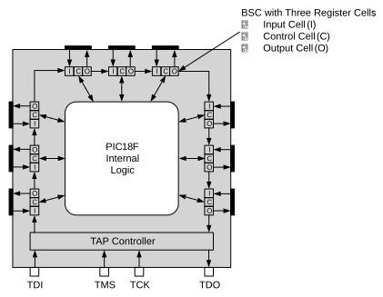

The BSR is a large shift register that is comprised of all the I/O Boundary Scan Cells
(BSCs), daisy-chained together (Figure 39-5). Each
I/O pin has one BSC, each containing three BSC registers: An input cell, an output cell
and a control cell. When the SAMPLE/PRELOAD or EXTEST
instructions are active, the BSR is placed between the TDI and TDO pins, with the TDI
pin as the input and the TDO pin as the output. The size of the BSR depends on the
number of I/O pins on the device. For example, the PIC18F57Q84 has 44 I/O pins. Removing the 4 TAP
control pins leaves 40 I/O pins with BSCs. With three
BSC registers for each of the 40 I/Os, this yields a
Boundary Scan register length of 120 bits.
